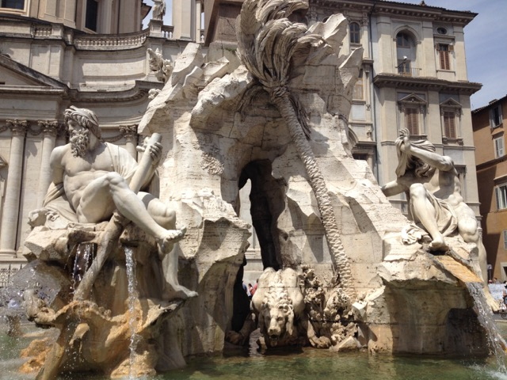

Statue of Giordano Bruno in Campo di Fiori, the square in Rome where he was burned at the stake.
We started our first day with Libero at the statue of Giordano Bruno in the middle of Campo di Fiori by our hotel. This seems appropriate to talk about when discussing Rome in the Baroque period, since Baroque artists, musicians, and architects made a point of doing things differently than the way they had been done before them. The same applies to Bruno, who disapproved of the far reaching power of the Pope and wanted to bring about change from the status quo.
Palazzo Farnese, currently the French embassy in Rome.
The Facade of Farnezi Palace is considered one of the great works of Michelangelo. Started by San Gallo, the building was unfinished because, (in the words of Libero) “luckily he died halfway through the project,” after which Michelangelo was commissioned to finish it. One of the defining features of the facade is the cornice, which projects further than most contemporary with it. Not coming from an architectural background, has been fascinating to learn what parts of a building are considered to be focal points and what was deemed to be impressive construction at different points in history. I would never have noticed that the size of a cornice was larger than usual, nor have given any thought to the difficulty of its construction without having that pointed out to me.
Sant'Ivo alla Sapienza
Sant'Ivo alla Sapienza is considered to be the masterpiece of Borromini. Built to replace the existing chapel for the University of Rome, the chapel incorporates many symbols of wisdom. The chapel itself is shaped on the interior like the star of David. There are also motifs incorporating the symbols of the patrons of the church, such as the three hills with an eight pointed star of the Chigi family, the oak tree and acorns of the Della Rovere family, and the bee of the Barberini family. The lantern of the chapel features a wire crown on top of a spiral, which itself is topped by a bronze orb and a cross.
Courtyard of Sant'Ivo alla Sapienza
The lanturn of Sant'Ivo alla Sapienza
Notebooks belonging to Borromini.
Sketch of the lantern of Sant'Ivo alla Sapienza
Balcony in courtyard of Sant'Ivo alla Sapienza. The facade is decorated with bees, representing the Barberini family.
Borromini and Bernini
We had talked about Bernini and Borromini some during the trip, but seeing so many of Borromini's works helped me to sympathize with him more. I can imagine that it was infuriating for Borromini, the more honest of the two, to feel like he wasn't getting the credit he deserved working under Bernini. He was also clearly desperate to prove himself as an architect if he was willing to work without pay. Even despite his efforts, it seemed like Bernini always had the upper hand, even to the point of getting himself commissioned to construct the Fontana dei Quattro Fiumi without being invited to do so. Personally, I do find Bernini's sculptures to be much very emotionally moving, but I can also appreciate the incorporation of interesting patterns and rhythms to create order in Borromini's works.

The Fontana dei Quattro Fiumi, or Fountain of the Four Rivers. On the left is the Ganges, represented by a man holding an oar to represent the river's navigability. On the right, the head of the Nile is covered because no one knew where the river began.
Inside dome of Borromini's church San Carlo alle Quattro Fontane
Sketch of the construction of the interior space at San Carlo
Balcony inside San Carlo with alternating orientations for ballastrades.
Sketch of the construction for Bernini's church of Sant'Andrea al Quirinale.
Sculpture above the inside of the entrance to Sant'Andrea
Sketch of the coffers used for the ceiling in Sant'Andrea.
Inside of Bernini's Sant'Andrea al Quirinale
The church of Santa Maria Degli Angeli was originally a Roman bath complex, converted to a church by Michelangelo. The planetarium from the original complex is missing, although a stained-glass skylight featuring celestial bodies hints that there was a planetarium nearby in the past. A single point in the side of the church is open to let sunlight in. The point of light from the ray created by this hole falls on a calendar inset into the ground, acting as a sundial.
Stained glass featuring celestial bodies.
The images of Libra, Virgo, and Leo, which decorate the sundial inside Santa Maria Degli Angeli